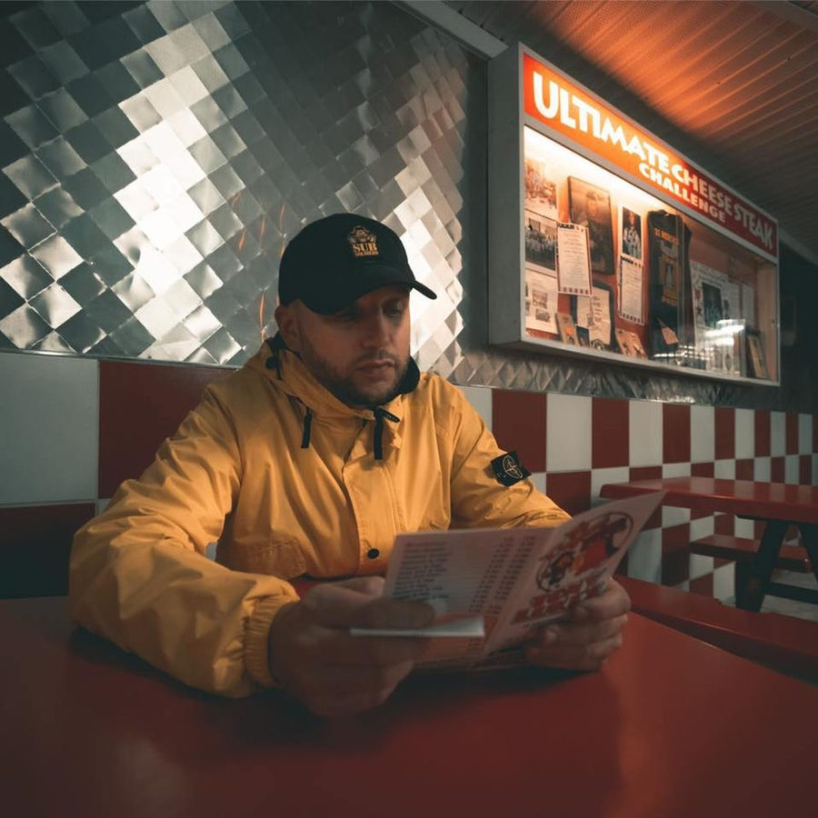

Caspa [Audio]: The dawn of dubstep


STREAMING AUDIO INTERVIEW
Every now and then a new genre of dance music rises up from obscurity and puts itself aggressively in the face of punters around the world, hence establishing itself as a household name. Late in the 90s it was breaks, early in the new millennium it was ‘electroclash’ while in the past few years it’s of course been minimal. So what’s the next form of dance that’s gonna take hold in clubs? The buzz is on dubstep, and it’s been the underground genre of music to watch in 2007.
DJ/producers pioneers Caspa & Rusko have been chosen to mix the latest installment of the Fabriclive series, and it’s a move that’ll see the dubstep sound pushed into the spotlight – it’s the junction where dub, reggae, garage and drum n’ bass come together and crossover, and it’s been sweeping through clubs across the UK. Caspa, one half of the duo, is about to land in Australia form a series of club shows and he talks to ITM’s Angus Paterson about being swept up the the movement that is dubstep, and it’s potential to crack through into the mainstream.
Fabriclive.37 mixed by Caspa & Rusko is out later this month through Inertia, and you can check out Caspa doing his thing at the following shows…
7th Dec: Phoenix Bar, Sydney
9th Dec: Uber 2nd Birthday, Brisbane
14th Dec: Perth
15th Dec: Rhino room, Adelaide
16th Dec: Melbourne
Wanna know more about dubstep? Check the mini documentary below…